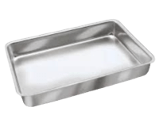

Ingredientes
- 1 Kg de coxa com sobre coxa
- 5 Batatas de tamanho medio cortadas ao meio
- 2 Colheres de mostarda
- 4 Colheres de maionese
- 1 Colher de Sabor a mi
- 1 Sache de "Meu frango assado"
- 1 Plastico celofane ou papel aluminio
Utensilios
-

Forma retangular
-
Colher de sopa
Modo de preparo
- Comece temperando o frango cru com a mostarda, a maionese, o sabor ami e o sache de "meu frango assado"
- Adicione o frango junto com o tempero no saco celofane com as batatas e feche com o lacre ou barbante (caso não tenha coloque diretamente na forma e tampe a forma com papel aluminio)
- Coloque a assadeira no forno pre-aquecido a 180º por 1 hora
- Após isso retire o saco/aluminio e deixe o frango dourar